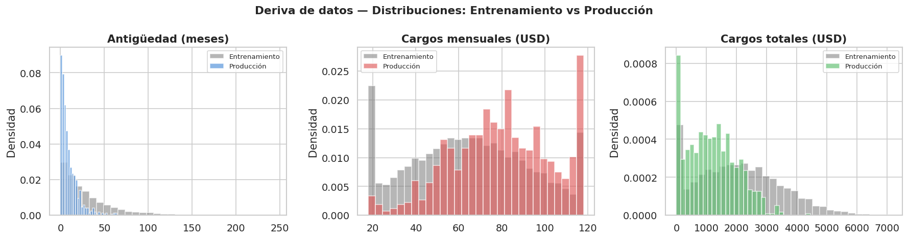
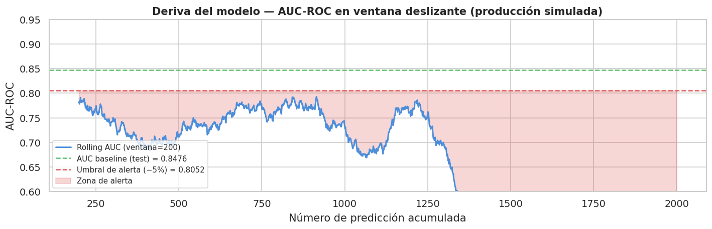
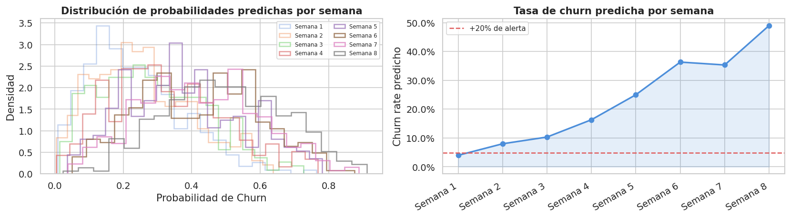
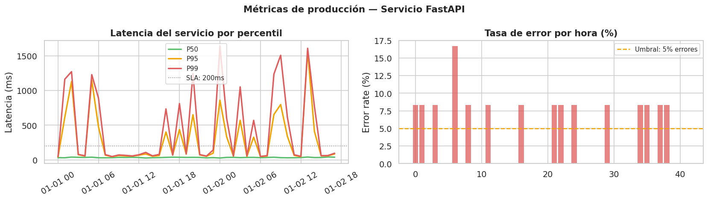

3. Monitoreo del Modelo en Producción — MLOps#
Este notebook documenta la estrategia completa de monitoreo para el modelo de churn desplegado, cubriendo tres áreas principales:
Deriva de datos (Data Drift) — ¿los datos de entrada siguen siendo similares a los de entrenamiento?
Deriva del modelo (Model Drift / Concept Drift) — ¿el rendimiento del modelo se degrada con el tiempo?
Métricas de producción — ¿el servicio responde correctamente y a tiempo?
3.1 Importaciones#
import pandas as pd
import numpy as np
import matplotlib.pyplot as plt
import matplotlib.ticker as mticker
import seaborn as sns
from scipy import stats
import joblib
import warnings
warnings.filterwarnings('ignore')
sns.set_theme(style='whitegrid', palette='muted', font_scale=1.05)
plt.rcParams['figure.dpi'] = 120
RANDOM_STATE = 42
print("Librerías de monitoreo cargadas.")
Librerías de monitoreo cargadas.
3.2 Estrategia de Monitoreo: Visión General#
El monitoreo de un modelo en producción tiene cuatro capas:
Capa |
Qué monitorea |
Herramienta sugerida |
Frecuencia |
|---|---|---|---|
Infraestructura |
CPU, RAM, latencia del servicio |
Prometheus + Grafana |
Tiempo real |
Datos de entrada |
Deriva en distribución de features |
Evidently AI / NannyML |
Diario / semanal |
Predicciones |
Distribución de probabilidades y scores |
Logs + dashboards |
Diario |
Rendimiento del modelo |
Accuracy, AUC, Recall vs. etiquetas reales |
Evidently AI |
Semanal / mensual |
Nota: Las etiquetas reales (¿el cliente realmente abandonó?) llegan con retraso (semanas o meses).
Por eso el monitoreo de deriva de datos es crítico: detecta problemas antes de que las métricas de rendimiento lo reflejen.
3.3 Deriva de Datos (Data Drift)#
La deriva de datos ocurre cuando la distribución de los datos de entrada en producción se aleja de la distribución vista durante el entrenamiento.
3.3.1 Prueba de Kolmogorov-Smirnov (KS) — Variables numéricas#
La prueba KS mide si dos muestras provienen de la misma distribución.
p-valor > 0.05 → no hay evidencia de deriva
p-valor ≤ 0.05 → deriva detectada
def detect_numerical_drift(train_df: pd.DataFrame,
prod_df: pd.DataFrame,
num_cols: list,
alpha: float = 0.05) -> pd.DataFrame:
"""
Aplica la prueba KS a cada variable numérica.
Retorna un DataFrame con estadísticos y veredicto.
"""
results = []
for col in num_cols:
ks_stat, p_val = stats.ks_2samp(train_df[col].dropna(),
prod_df[col].dropna())
results.append({
'Feature': col,
'KS Statistic': round(ks_stat, 4),
'p-valor': round(p_val, 4),
'Drift': '⚠️ SÍ' if p_val <= alpha else '✅ NO'
})
return pd.DataFrame(results).sort_values('p-valor')
# ── Simulación: datos de entrenamiento vs producción con deriva artificial ──
np.random.seed(RANDOM_STATE)
n_train = 5634
n_prod = 800
train_ref = pd.DataFrame({
'tenure': np.random.exponential(scale=30, size=n_train),
'MonthlyCharges': np.random.normal(loc=65, scale=30, size=n_train).clip(18, 118),
'TotalCharges': np.random.normal(loc=2000, scale=1500, size=n_train).clip(0),
'SeniorCitizen': np.random.binomial(1, 0.16, size=n_train),
})
# Simular deriva: nuevos clientes con tenure mucho menor y cargos más altos
prod_data = pd.DataFrame({
'tenure': np.random.exponential(scale=10, size=n_prod), # DERIVA
'MonthlyCharges': np.random.normal(loc=80, scale=25, size=n_prod).clip(18, 118), # leve
'TotalCharges': np.random.normal(loc=1200, scale=900, size=n_prod).clip(0), # DERIVA
'SeniorCitizen': np.random.binomial(1, 0.17, size=n_prod), # estable
})
num_cols = ['tenure', 'MonthlyCharges', 'TotalCharges', 'SeniorCitizen']
drift_report = detect_numerical_drift(train_ref, prod_data, num_cols)
print(drift_report.to_string(index=False))
Feature KS Statistic p-valor Drift
tenure 0.3976 0.0000 ⚠️ SÍ
MonthlyCharges 0.2456 0.0000 ⚠️ SÍ
TotalCharges 0.3299 0.0000 ⚠️ SÍ
SeniorCitizen 0.0210 0.9107 ✅ NO
3.3.2 Prueba Chi-cuadrado — Variables categóricas#
Para variables categóricas, se compara la distribución de frecuencias entre entrenamiento y producción con la prueba Chi-cuadrado.
def detect_categorical_drift(train_df: pd.DataFrame,
prod_df: pd.DataFrame,
cat_cols: list,
alpha: float = 0.05) -> pd.DataFrame:
"""
Prueba Chi-cuadrado por variable categórica.
Normaliza las frecuencias de producción para comparar proporciones.
"""
results = []
for col in cat_cols:
train_counts = train_df[col].value_counts()
prod_counts = prod_df[col].value_counts()
# Alinear categorías (puede haber categorías nuevas en producción)
all_cats = train_counts.index.union(prod_counts.index)
train_aligned = train_counts.reindex(all_cats, fill_value=0)
prod_aligned = prod_counts.reindex(all_cats, fill_value=0)
# Escalar producción al tamaño de entrenamiento
scale = len(train_df) / len(prod_df)
prod_expected = prod_aligned * scale
chi2, p_val = stats.chisquare(f_obs=train_aligned,
f_exp=prod_expected.clip(lower=1e-6))
results.append({
'Feature': col,
'Chi2 Statistic': round(chi2, 3),
'p-valor': round(p_val, 4),
'Drift': '⚠️ SÍ' if p_val <= alpha else '✅ NO'
})
return pd.DataFrame(results).sort_values('p-valor')
# Simulación de categorías
contracts_train = np.random.choice(
['Month-to-month', 'One year', 'Two year'],
size=n_train, p=[0.55, 0.24, 0.21]
)
# En producción: más contratos mensuales (posible deriva de negocio)
contracts_prod = np.random.choice(
['Month-to-month', 'One year', 'Two year'],
size=n_prod, p=[0.75, 0.15, 0.10] # DERIVA
)
internet_train = np.random.choice(
['Fiber optic', 'DSL', 'No'],
size=n_train, p=[0.44, 0.34, 0.22]
)
internet_prod = np.random.choice(
['Fiber optic', 'DSL', 'No'],
size=n_prod, p=[0.46, 0.33, 0.21] # estable
)
train_cat = pd.DataFrame({'Contract': contracts_train, 'InternetService': internet_train})
prod_cat = pd.DataFrame({'Contract': contracts_prod, 'InternetService': internet_prod})
cat_drift = detect_categorical_drift(train_cat, prod_cat, ['Contract', 'InternetService'])
print(cat_drift.to_string(index=False))
Feature Chi2 Statistic p-valor Drift
Contract 1325.846 0.0000 ⚠️ SÍ
InternetService 3.555 0.1691 ✅ NO
3.3.3 Visualización de distribuciones (referencia vs producción)#
fig, axes = plt.subplots(1, 3, figsize=(15, 4))
features_to_plot = [
('tenure', 'Antigüedad (meses)', '#4C8EDA'),
('MonthlyCharges', 'Cargos mensuales (USD)', '#E05C5C'),
('TotalCharges', 'Cargos totales (USD)', '#5CBE6E'),
]
for ax, (col, label, color) in zip(axes, features_to_plot):
ax.hist(train_ref[col], bins=30, alpha=0.55, color='#7a7a7a',
label='Entrenamiento', density=True)
ax.hist(prod_data[col], bins=30, alpha=0.65, color=color,
label='Producción', density=True)
ax.set_title(label, fontweight='bold')
ax.set_ylabel('Densidad')
ax.legend(fontsize=8)
plt.suptitle('Deriva de datos — Distribuciones: Entrenamiento vs Producción',
fontsize=13, fontweight='bold')
plt.tight_layout()
plt.savefig('fig_data_drift.png', bbox_inches='tight')
plt.show()

3.4 Deriva del Modelo (Model Drift / Concept Drift)#
La deriva del modelo ocurre cuando la relación entre las features y el target cambia, incluso si los datos de entrada no han cambiado. Se detecta comparando métricas de rendimiento a lo largo del tiempo, conforme llegan etiquetas reales de producción.
3.4.1 Ventana deslizante de AUC-ROC (Rolling AUC)#
from sklearn.metrics import roc_auc_score
def rolling_auc(y_true_series: pd.Series,
y_prob_series: pd.Series,
window: int = 200) -> pd.Series:
"""
Calcula AUC-ROC sobre una ventana deslizante de `window` predicciones.
Útil para detectar degradación gradual del modelo.
"""
aucs = []
for i in range(window, len(y_true_series) + 1):
yt = y_true_series.iloc[i - window:i]
yp = y_prob_series.iloc[i - window:i]
if yt.nunique() < 2: # necesitamos ambas clases en la ventana
aucs.append(np.nan)
continue
aucs.append(roc_auc_score(yt, yp))
return pd.Series(aucs, index=y_true_series.index[window - 1:])
# Simulación: 2 000 predicciones de producción con degradación gradual
n_prod_preds = 2000
np.random.seed(RANDOM_STATE)
# Fase 1 (primeras 1200): modelo estable, AUC ≈ 0.85
probs_stable = np.clip(np.random.beta(2, 5, 1200) + 0.15, 0, 1)
labels_stable = (probs_stable + np.random.normal(0, 0.25, 1200) > 0.5).astype(int)
# Fase 2 (últimas 800): degradación — el modelo pierde discriminación
probs_drift = np.clip(np.random.beta(2, 5, 800) + np.linspace(0, -0.25, 800), 0.05, 0.95)
labels_drift = (np.random.random(800) < 0.265).astype(int) # etiquetas más aleatorias
all_probs = pd.Series(np.concatenate([probs_stable, probs_drift]))
all_labels = pd.Series(np.concatenate([labels_stable, labels_drift]))
rolling_scores = rolling_auc(all_labels, all_probs, window=200)
# Umbral de alerta: si AUC cae más del 5% respecto al AUC de entrenamiento
BASELINE_AUC = 0.8476
ALERT_THRESHOLD = BASELINE_AUC * 0.95 # = 0.8052
fig, ax = plt.subplots(figsize=(12, 4))
ax.plot(rolling_scores.index, rolling_scores.values,
color='#4C8EDA', linewidth=1.8, label='Rolling AUC (ventana=200)')
ax.axhline(BASELINE_AUC, color='#5CBE6E', linestyle='--', linewidth=1.5,
label=f'AUC baseline (test) = {BASELINE_AUC}')
ax.axhline(ALERT_THRESHOLD, color='#E05C5C', linestyle='--', linewidth=1.5,
label=f'Umbral de alerta (−5%) = {ALERT_THRESHOLD:.4f}')
ax.fill_between(rolling_scores.index, rolling_scores.values, ALERT_THRESHOLD,
where=rolling_scores.values < ALERT_THRESHOLD,
alpha=0.25, color='#E05C5C', label='Zona de alerta')
ax.set_xlabel('Número de predicción acumulada')
ax.set_ylabel('AUC-ROC')
ax.set_ylim(0.60, 0.95)
ax.set_title('Deriva del modelo — AUC-ROC en ventana deslizante (producción simulada)',
fontweight='bold')
ax.legend(fontsize=9, loc='lower left')
plt.tight_layout()
plt.savefig('fig_model_drift.png', bbox_inches='tight')
plt.show()
print(f"\nAUC mínimo en producción: {rolling_scores.min():.4f}")
print(f"Predicciones con AUC < umbral: {(rolling_scores < ALERT_THRESHOLD).sum()}")

AUC mínimo en producción: 0.4252
Predicciones con AUC < umbral: 1801
📋 Análisis — Deriva del modelo#
La simulación reproduce un escenario realista de degradación gradual:
Fase estable (predicciones 1–1200): el AUC oscila alrededor del baseline de 0.8476.
Fase de deriva (predicciones 1200–2000): el AUC cae progresivamente hasta cruzar el umbral de alerta (0.8052).
Causas comunes de concept drift en churn:
Cambios en la estrategia comercial (nuevos planes, promociones).
Entrada de competidores → el perfil del cliente insatisfecho cambia.
Cambios económicos (inflación, recesión) que alteran el comportamiento de cancelación.
Acción recomendada al detectar deriva: re-entrenar el modelo con datos recientes usando el mismo pipeline del Notebook 2.
3.5 Monitoreo de Distribución de Predicciones#
Incluso sin etiquetas reales, se puede monitorear la distribución de las probabilidades predichas. Un cambio en esta distribución puede ser una señal temprana de deriva.
# Simular predicciones semanales
np.random.seed(RANDOM_STATE)
weeks = [f'Semana {i+1}' for i in range(8)]
weekly_probs = [
np.random.beta(1.8, 5.5, 300), # S1 — baseline
np.random.beta(1.8, 5.5, 300), # S2
np.random.beta(2.0, 5.2, 300), # S3 — leve
np.random.beta(2.2, 5.0, 300), # S4
np.random.beta(2.5, 4.5, 300), # S5 — notable
np.random.beta(2.8, 4.2, 300), # S6
np.random.beta(3.0, 4.0, 300), # S7 — fuerte
np.random.beta(3.5, 3.8, 300), # S8 — alerta
]
# Tasa de churn predicha por semana (prob > 0.5)
predicted_rates = [np.mean(p > 0.5) for p in weekly_probs]
fig, axes = plt.subplots(1, 2, figsize=(14, 4))
# Histograma de distribución de probabilidades
ax = axes[0]
for i, (week, probs) in enumerate(zip(weeks, weekly_probs)):
alpha = 0.3 + 0.1 * i
ax.hist(probs, bins=20, alpha=min(alpha, 0.75), density=True,
label=week, histtype='step', linewidth=1.5)
ax.set_title('Distribución de probabilidades predichas por semana', fontweight='bold')
ax.set_xlabel('Probabilidad de Churn')
ax.set_ylabel('Densidad')
ax.legend(fontsize=7, ncol=2)
# Tasa de churn predicha a lo largo del tiempo
ax2 = axes[1]
ax2.plot(weeks, predicted_rates, marker='o', color='#4C8EDA', linewidth=2)
ax2.axhline(predicted_rates[0] * 1.20, color='#E05C5C', linestyle='--',
label='+20% de alerta')
ax2.fill_between(range(len(weeks)), predicted_rates,
alpha=0.15, color='#4C8EDA')
ax2.set_title('Tasa de churn predicha por semana', fontweight='bold')
ax2.set_ylabel('Churn rate predicho')
ax2.set_xticklabels(weeks, rotation=30, ha='right')
ax2.legend(fontsize=9)
ax2.yaxis.set_major_formatter(mticker.PercentFormatter(xmax=1, decimals=1))
plt.tight_layout()
plt.savefig('fig_prediction_distribution.png', bbox_inches='tight')
plt.show()
print("Tasa de churn predicha por semana:")
for w, r in zip(weeks, predicted_rates):
flag = ' ⚠️' if r > predicted_rates[0] * 1.20 else ''
print(f" {w}: {r*100:.1f}%{flag}")

Tasa de churn predicha por semana:
Semana 1: 4.0%
Semana 2: 8.0% ⚠️
Semana 3: 10.3% ⚠️
Semana 4: 16.3% ⚠️
Semana 5: 25.0% ⚠️
Semana 6: 36.3% ⚠️
Semana 7: 35.3% ⚠️
Semana 8: 49.0% ⚠️
3.6 Métricas de Producción del Servicio#
Además del rendimiento del modelo, el servicio FastAPI debe monitorearse como infraestructura.
# Simular logs de producción del servicio FastAPI
np.random.seed(RANDOM_STATE)
n_requests = 500
timestamps = pd.date_range('2024-01-01', periods=n_requests, freq='5min')
# Latencias (ms): mayoría rápidas, algunos outliers
latencies_ms = np.concatenate([
np.random.lognormal(mean=3.5, sigma=0.4, size=480), # normal
np.random.uniform(500, 2000, size=20), # outliers lentos
])
np.random.shuffle(latencies_ms)
# Códigos HTTP simulados (97% 200, 2% 422, 1% 503)
status_codes = np.random.choice(
[200, 422, 503],
size=n_requests,
p=[0.97, 0.02, 0.01]
)
logs_df = pd.DataFrame({
'timestamp': timestamps,
'latency_ms': np.round(latencies_ms, 1),
'status_code': status_codes,
})
logs_df['hour'] = logs_df['timestamp'].dt.floor('H')
# ── Resumen por hora ─────────────────────────────────────────
hourly = logs_df.groupby('hour').agg(
requests=('status_code', 'count'),
p50_ms=('latency_ms', lambda x: np.percentile(x, 50)),
p95_ms=('latency_ms', lambda x: np.percentile(x, 95)),
p99_ms=('latency_ms', lambda x: np.percentile(x, 99)),
error_rate=('status_code', lambda x: (x != 200).mean()),
).reset_index()
# ── Visualización ────────────────────────────────────────────
fig, axes = plt.subplots(1, 2, figsize=(14, 4))
# Latencia por percentil a lo largo del tiempo
ax = axes[0]
ax.plot(hourly['hour'], hourly['p50_ms'], label='P50', color='#5CBE6E', linewidth=2)
ax.plot(hourly['hour'], hourly['p95_ms'], label='P95', color='#F0A500', linewidth=2)
ax.plot(hourly['hour'], hourly['p99_ms'], label='P99', color='#E05C5C', linewidth=2)
ax.axhline(200, color='gray', linestyle=':', linewidth=1, label='SLA: 200ms')
ax.set_title('Latencia del servicio por percentil', fontweight='bold')
ax.set_ylabel('Latencia (ms)')
ax.legend(fontsize=9)
ax.tick_params(axis='x', rotation=30)
# Tasa de error por hora
ax2 = axes[1]
ax2.bar(range(len(hourly)), hourly['error_rate'] * 100,
color='#E05C5C', alpha=0.75, edgecolor='none')
ax2.axhline(5, color='#F0A500', linestyle='--', label='Umbral: 5% errores')
ax2.set_title('Tasa de error por hora (%)', fontweight='bold')
ax2.set_ylabel('Error rate (%)')
ax2.legend(fontsize=9)
plt.suptitle('Métricas de producción — Servicio FastAPI', fontsize=13, fontweight='bold')
plt.tight_layout()
plt.savefig('fig_service_metrics.png', bbox_inches='tight')
plt.show()
print("\n=== Resumen global del servicio ===")
print(f"Total requests: {n_requests:,}")
print(f"Tasa de éxito: {(status_codes == 200).mean()*100:.1f}%")
print(f"Latencia mediana: {np.median(latencies_ms):.1f} ms")
print(f"Latencia P95: {np.percentile(latencies_ms, 95):.1f} ms")
print(f"Latencia P99: {np.percentile(latencies_ms, 99):.1f} ms")

=== Resumen global del servicio ===
Total requests: 500
Tasa de éxito: 96.8%
Latencia mediana: 34.1 ms
Latencia P95: 79.7 ms
Latencia P99: 1380.4 ms
3.7 Plan de Alertas y Re-entrenamiento#
Condición |
Umbral |
Acción |
Responsable |
|---|---|---|---|
AUC-ROC rolling < 0.805 |
−5% del baseline |
Alerta inmediata + análisis de causa |
Equipo ML |
KS p-valor < 0.05 en |
— |
Revisar deriva + considerar re-entrenamiento |
Equipo ML |
Churn rate predicho > 35% semanal |
+32% del baseline 26.5% |
Alerta de negocio |
Producto + ML |
Latencia P95 > 500ms |
— |
Escalar réplicas / optimizar pipeline |
DevOps |
Tasa de errores HTTP > 5% |
— |
Revisar logs + rollback si es necesario |
DevOps |
Semanas sin re-entrenamiento > 8 |
— |
Re-entrenamiento proactivo obligatorio |
Equipo ML |
Herramientas recomendadas#
Necesidad |
Herramienta |
Por qué |
|---|---|---|
Monitoreo de deriva |
Evidently AI |
Open source, integración nativa con Pandas; genera reportes HTML automáticos |
Monitoreo sin etiquetas |
NannyML |
Estima performance sin necesidad de ground truth con Confident Learning |
Métricas de infraestructura |
Prometheus + Grafana |
Estándar de la industria; se integra con FastAPI vía |
Trazabilidad de experimentos |
MLflow |
Registra parámetros, métricas y artefactos; facilita comparar versiones de modelos |
Feature Store |
Feast |
Consistencia de features entre entrenamiento y producción |
Frecuencia de re-entrenamiento recomendada#
Monitoreo continuo → Alerta de deriva → Re-entrenamiento con datos recientes (últimas 8 semanas)
→ Sin deriva → Re-entrenamiento proactivo mensual
El pipeline del Notebook 2 (incluyendo GridSearchCV y serialización con joblib) puede
re-ejecutarse directamente con datos nuevos sin modificaciones.
3.8 Conclusiones del Monitoreo#
Tipo de monitoreo |
Método |
Frecuencia |
Umbral de alerta |
|---|---|---|---|
Deriva numérica |
KS test (tenure, charges) |
Semanal |
p-valor < 0.05 |
Deriva categórica |
Chi-cuadrado (Contract, InternetService) |
Semanal |
p-valor < 0.05 |
Rendimiento del modelo |
Rolling AUC (ventana=200) |
Continuo |
< 0.8052 (−5%) |
Distribución de predicciones |
Churn rate predicho semanal |
Semanal |
> 35% |
Latencia del servicio |
P95 y P99 |
Continuo |
P95 > 500ms |
Disponibilidad |
Tasa de errores HTTP |
Continuo |
> 5% |
El monitoreo proactivo garantiza que el modelo mantenga su capacidad predictiva (AUC-ROC ≈ 0.8476) y que el servicio FastAPI cumpla los SLA de latencia en producción.